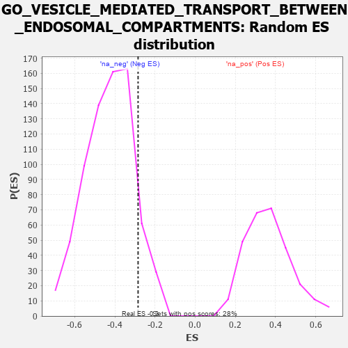

| | | Dataset | 7d |
| Phenotype | NoPhenotypeAvailable |
| Upregulated in class | na_neg |
| GeneSet | GO_VESICLE_MEDIATED_TRANSPORT_BETWEEN_ENDOSOMAL_COMPARTMENTS |
| Enrichment Score (ES) | -0.28440416 |
| Normalized Enrichment Score (NES) | -0.66556215 |
| Nominal p-value | 0.89972144 |
| FDR q-value | 1.0 |
| FWER p-Value | 1.0 |
Table: GSEA Results Summary
 Fig 1: Enrichment plot: GO_VESICLE_MEDIATED_TRANSPORT_BETWEEN_ENDOSOMAL_COMPARTMENTS
Fig 1: Enrichment plot: GO_VESICLE_MEDIATED_TRANSPORT_BETWEEN_ENDOSOMAL_COMPARTMENTS
Profile of the Running ES Score & Positions of GeneSet Members on the Rank Ordered List
| PROBE | GENE SYMBOL | GENE_TITLE | RANK IN GENE LIST | RANK METRIC SCORE | RUNNING ES | CORE ENRICHMENT | | 1 | MYO1D | | | 1099 | 0.464 | -0.0403 | No |
| 2 | SRC | | | 1128 | 0.459 | 0.0529 | No |
| 3 | SNF8 | | | 2119 | 0.288 | -0.0107 | No |
| 4 | BECN1 | | | 2828 | 0.179 | -0.0619 | No |
| 5 | MTMR2 | | | 3126 | 0.133 | -0.0712 | No |
| 6 | AKTIP | | | 3178 | 0.125 | -0.0512 | No |
| 7 | MAPK3 | | | 3589 | 0.062 | -0.0896 | No |
| 8 | VPS11 | | | 4202 | -0.041 | -0.1578 | No |
| 9 | RAB21 | | | 4620 | -0.122 | -0.1845 | Yes |
| 10 | CHMP3 | | | 4660 | -0.129 | -0.1622 | Yes |
| 11 | WDR81 | | | 5024 | -0.203 | -0.1651 | Yes |
| 12 | RAB7A | | | 5302 | -0.271 | -0.1428 | Yes |
| 13 | EEA1 | | | 6430 | -0.631 | -0.1512 | Yes |
| 14 | RAB5A | | | 6655 | -0.741 | -0.0230 | Yes |
| 15 | SNX3 | | | 6934 | -0.893 | 0.1303 | Yes |
Table: GSEA details [plain text format]

Fig 2: GO_VESICLE_MEDIATED_TRANSPORT_BETWEEN_ENDOSOMAL_COMPARTMENTS: Random ES distribution
Gene set null distribution of ES for GO_VESICLE_MEDIATED_TRANSPORT_BETWEEN_ENDOSOMAL_COMPARTMENTS